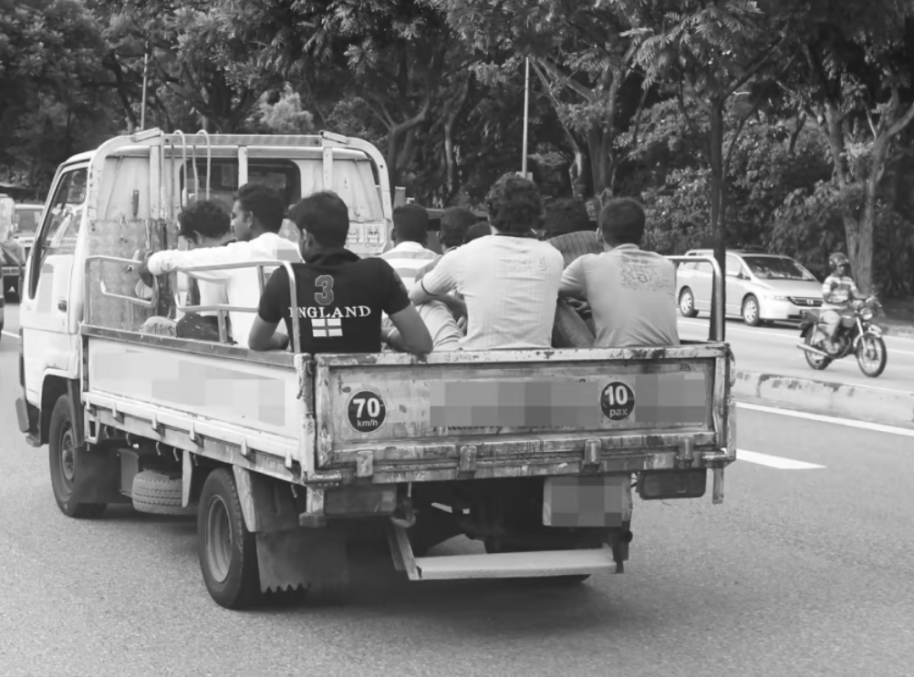
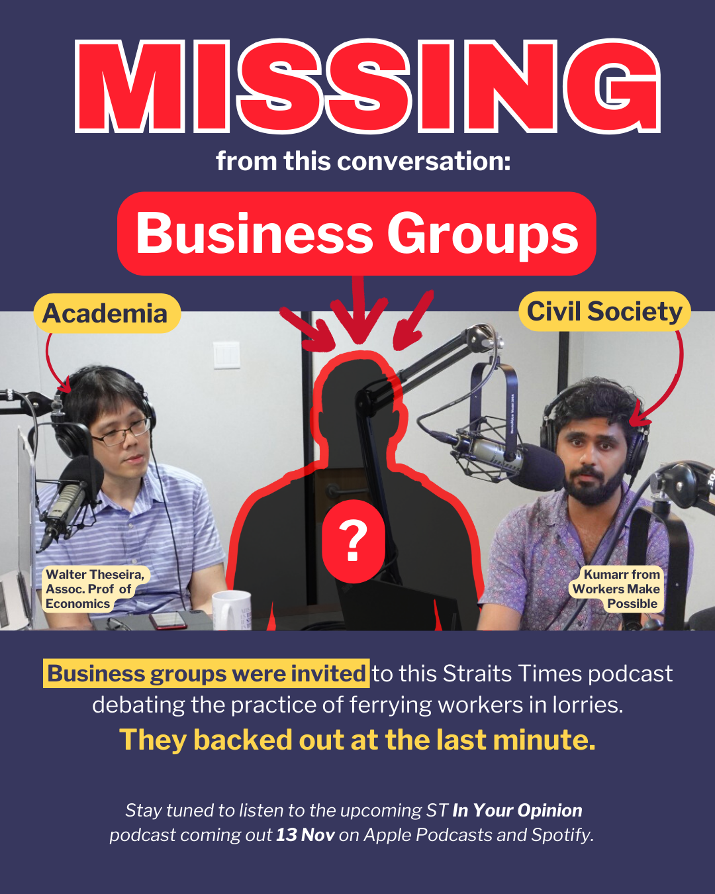

Between 2011 and 2020 alone, 58 workers on-board lorries died in road traffic accidents, and 4765 were injured.
How many more years must we mourn these completely preventable deaths? What will it take before the dignity and the basic right to safe transportation is restored to our migrant brothers? If our Ministers would not put their children in the backs of lorries, then they have no business putting other people’s children – our migrant brothers – in the backs of lorries.
Migrant workers’ lives matter. And they certainly matter more than their bosses’ profits.
Lorries Are Not Safe for Human Transport
Lorries are goods vehicles not designed to carry passengers as they do not have appropriate seating and safety belts. Ferrying people on the back of lorries is unsafe, which is why the Road Traffic Act (RTA) generally does not allow for passengers to be transported on the back of goods vehicles unless it is carrying someone injured in an emergency situation. However, the Road Traffic Act makes an exception for transporting workers employed by the vehicle's owner.
Transporting workers on the back of lorries have resulted in thousands of workers being injured, maimed or killed in accidents involving lorries in the past 10 years. Despite some incremental safety measures (i.e. having rain covers and drivers adopt safer driving habits) being implemented over the years, there are still serious lorry accidents. 37 workers were injured in lorry accidents between 18 and 19 July 2023 alone.
Lorries are inherently unsafe to carry passengers and cannot be retrofitted to be safe for passengers. The original equipment manufacturers have stated that the retrofitting of lorries with seating, seatbelts and reinforcements for the floorboards may compromise the structural integrity and alter the vehicle dynamics, thus creating new safety risks (source). If we continue allowing workers to be transported on the back of lorries, we risk the lives and limbs of workers.
Safety at a Cost to Employers?
Employers regularly state that transport arrangements for workers will increase the costs to their employers. In a joint statement made by 25 business groups on 1 Aug 2023 to urge the government not to ban transporting workers in lorries, employers have stated that without these cost savings, many companies will not be able to continue operating their business. This means that transporting workers by unsafe means has been used as a means to subsidize business operation costs for otherwise unviable businesses in Singapore.
The 25 business groups have conveyed to the government that they may cover these increased costs by laying off more workers, and these layoffs will cause workers to lose their livelihoods and result in insufficient manpower for them to complete their projects.
It seems duplicitous that these employers have expressed concerns for workers’ livelihoods when they risk their workers’ very lives and safety while continuing to transport workers in this dangerous way. Many workers who have been in serious lorry accidents have lost their capacity to work when they become disabled. Workers who have lost their lives also leave families and communities without their breadwinner.
Employers in Singapore have also not provided concrete evidence to show that cutting costs via transporting their workers in lorries or laying workers off is the only way to make their business viable. We should carefully examine the other costs in the supply chain to better understand how the government and businesses can mitigate the higher costs of transporting workers safely without passing on further costs to consumers. For example, the government collects levies for each foreign worker employed in Singapore, and it is worthwhile examining whether this revenue collected can be channeled to providing safer transport for workers. Businesses in Singapore have been encouraged to increase their productivity through innovation, thus we should also examine the effectiveness of these measures to ensure the viability of businesses and safeguard the livelihoods of workers.
Migrant Workers as Second Class Humans
The 25 business groups have also stated that society must be ready to “accept a change in the social compact” during the process of transitioning to safer transport for workers. The businesses postulate that there will be increased traffic and commuter congestion with alternative transport arrangements for workers.
In response to these claims, some have suggested that congestion may be mitigated through scheduling, such as how some schools and workplaces have adjusted their schedules to reduce overcrowding at peak hours. Ultimately, if Singapore truly requires this number of workers to support our economy, we should reexamine how our transport systems and infrastructure can accommodate our entire population in the long run.
There also seems to be an implication that Singaporeans will face challenges in sharing the same spaces as migrant workers on public transport. If Singapore requires migrant workers to support our economy, then we also urgently need to create a society in which everyone, including migrant workers, can work and live alongside each other in safety and dignity.
Unlike community groups, civil society and migrant workers, business groups are not willing to publicly participate in discourse about this topic, choosing instead to privately lobby the government in closed-door discussions and participate in limited interviews with the media. When given the opportunity to directly justify their practices in a discussion with a representative from academia and civil society, business groups pulled out last minute.
End Lorry Rides, Save Workers' Lives
Ban Them Immediately
On the early morning of 18 July 2023, three lorries piled up in an accident on Kranji Expressway. 26 migrant workers who had been riding in them were taken to three different hospitals after sustaining injuries. The very next day, a car collided with a lorry on the KPE. 11 people were taken to the hospital, including 10 migrant workers from the lorry.
Meanwhile, a mere two weeks ago in Parliament, the Singapore government chose again to reject an adjournment motion by MP Louis Ng to ban the ferrying of workers on lorries. Senior Minister of Transport Amy Khor said the government agreed that it “would be ideal” not to transport workers in lorries, but then went on to repeat the same tired excuses, like how there were “not enough drivers with the necessary license” and “not enough private buses”, as if this were not issues that could have been resolved years ago.
The feeble steps that the government has taken so far - which they claim increases safety on lorries - are grossly inadequate, and a mere distraction from what is plainly the right thing to do – ban ferrying workers on goods lorries. The simple fact remains that good lorries were never designed for human transport – they are not safety tested for human transport, and they violate the dignity of workers, who are exposed to heat stress and heavy rains on the road, always anxious if they will reach their destination safely.
The government’s inaction is further inexcusable given the wide range of transport alternatives that so many other countries rely on to transport workers in similar industries, including high tech-bus scheduling and shuttle services that allow companies to share buses, mini-buses, goods-cum-passenger vehicles, and more.
In 2020, the minimum amount of foreign worker levy the government collected in the industries that ferry workers in lorries would have been at least 1.1. billion dollars. The government can use some of this levy money to support smaller companies that may face start-up challenges with transitioning away from lorries and towards safer transport options.
But when, instead of confronting the issue with the gravity and urgency it requires, the government engages in handwringing and theatrics about “trade-offs” and the “acute pain” to industry that would be caused by banning lorries, we have no choice but to conclude that they simply do not care about workers’ lives, or the real, acute pain that injured workers and grieving families thousands of miles away experience every year because of our unconscionable choices.
Over the years, more and more voices have called for an end to transporting workers in lorries, including rights groups, health and safety experts, MPs, and migrant workers themselves. In a Straits Times article in 2021, NTUC assistant secretary general Melvin Yong stated that “there is a perfectly viable alternative to transport our migrant workers – in buses, equipped with seat belts”. A people’s petition in 2020 to ban lorries garnered over 40,000 signatories in a single week. It is abundantly clear what the people want - it weighs heavily on ordinary Singaporeans’ conscience that we put workers at risk every day, while we travel safely in buses, taxis, cars and the MRT. Does it not weigh on the government’s?
Between 2011 and 2020 alone, 58 workers on-board lorries died in road traffic accidents, and 4765 were injured.
How many more workers will be injured while the government continues to have “difficult conversations”? How many more years must we mourn these completely preventable deaths? What will it take before the dignity and the basic right to safe transportation is restored to our migrant brothers?
If our Ministers would not put their children in the backs of lorries, then they have no business putting other people’s children – our migrant brothers – in the backs of lorries.
Migrant workers’ lives matter. And they certainly matter more than their bosses’ profits.
We, the undersigned,
call on the government to:
a) Immediately ban the ferrying of migrant workers on lorries;
b) Set up an MOT initiative to support companies that may face challenges with transitioning towards safer modes of transport
Louis Ng Passionately Appeals for an End to Lorry Rides
5 July 2023
Parliament has been dragging its feet about the issue of ferrying migrant workers in lorries for FOURTEEN YEARS. Migrant workers, civil society, NGOs and community groups say TOO LITTLE has been done, TOO LATE. Ban lorry transport of workers NOW!
Watch on InstagramProf Tommy Koh Vs. Amy Khor
2 August 2023
Prof Tommy Koh: "[The 20 business groups which signed a joint statement opposing any change to the status quo] are resorting to scare tactics to support their cause... The real reason for their opposition is money."
Watch on InstagramAmy Khor Clowns Around Defending Lorry Transport
2 August 2023
Are we really "all on the same page" when one side is defending the DANGEROUS and DEMEANING practice of transporting workers by lorry while the other is calling for a ban?
Watch on InstagramHe Ting Ru Demands Evidence From Government and Businesses
10 May 2021
Gov and businesses: You can't just ban lorries! It will cost so much money!
Everyone else: Ok, how much?
Gov: Uh... we also dunno...
Watch on Instagram
As part of its far-reaching advocacy for migrant workers in Singapore, HOME has campaigned for an end to lorry transport of workers for years. In a letter published by TODAY in 2010 titled “What Price a Worker’s Life?”, HOME criticised the LTA workgroup set up to recommend new measures addressing the crisis - “it is worth noting that the work group which recommended them did not have any union representatives or worker’s groups on its committee”. More recently, It clearly asserted in statements such as Labour Day 2021: Workers' Safety Should Be Better Protected that “migrant workers should be protected by the same passenger safety rules as for all commuters. Legislative carve-outs of lower safety standards are discriminatory because they endanger migrant workers disproportionately.” More recently, HOME signed on to a joint statement alongside 46 other individuals and community groups calling upon the Ministry of Transport to provide a timeline for measures.
Learn more about HOME’s valuable work here, and consider donating to ensure they can continue their work in advocacy and material support for migrant workers for many years to come.
Humans Not Cargo is a Singapore-based movement to abolish the unsafe practice of transporting low-wage migrant workers in lorries between their dormitories and worksites. It is a project which built upon the important work of Humans Aren’t Cargo, a blog originally started by Stephanie Chok in 2008 as a way to archive news stories about workers being transported on the backs of lorries and a resource for people who want to find out more information. The blog also serves to show how long this problem has existed. In its current form, Humans Not Cargo serves as a platform to build an archive of media evidence that documents the unsafe transportation of migrant workers, as well as to unpack, analyse and educate on the politics of this practice. Eventually, HNC hopes to abolish the archaic practice altogether and propose a safe and comfortable alternative.
Since HNC is an archival project, anyone is able to contribute by submitting pictures of lorries ferrying workers. Read Humans Not Cargo’s instructions for submissions here, and submit pictures via their email here.
The Migrant Death Map is a project completed between July 2021 and October 2022, centering around a compelling interactive mapand archival website. According to a note from the team, the Migrant Death Map is “a development of the work” individuals in the team had already been doing, and “was born of inspiration, necessity, disbelief, and the desire to commit the names and lives of these workers to a nation’s collective memory”. The map was inspired by the Migrant Worker Solidarity Network’s Resistance Map, made by a self-organised group of individuals which the team had spoken to during the height of India’s COVID-19 crisis in June 2021. The archival and documentation work within Migrant Death Map’s website is thorough, accurate and deeply moving, and many efforts, including our ELRSWL website, have drawn on their meticulous research.
In their page on Lorry Accidents, the team writes: “In 2009, it was reported that “an average of 4 workers a week never reached their destinations in one piece.”¹ In 2021, in the span of a mere month, 2 migrant workers— Sugunan Sudheeshmon and Tofazzal Hossain—were killed and 37 others were injured in two separate accidents when the lorries they were travelling on collided with other vehicles. Transported everyday in a space that should only ever be meant for cargo, migrant workers are bereft of their dignity and basic right to safe transportation.”
Recently, the Migrant Death Map organised an event “The Human Cost of ‘Progress’ in Singapore”, a special "teach-in" event, to explore how the Migrant Death Map project can be an invaluable educational tool. Targeted at teachers, educators, migrant justice advocates and interested members of the public, the event encouraged participants to “learn about the interconnectedness of migrant justice issues, and how [they] can bring these critical conversations into the classroom”. This event was supported by Singapore Unbound, HOME, TWC2, MARUAH, Migrant Mutual Aid and The Projector, and included Kontinentalist as a guest speaker!
Visit the Migrant Death Map website here and their excellent page about lorry accidents here.
Migrant Workers Singapore is a community of migrant workers who use their platform to showcase migrant talents and shared culture. As part of the community which is directly impacted by the continued transport of workers via lorries, these migrant workers provide a perspective which is often ignored and belittled by the government and media. Their videos from within lorries during heavy rain show the visceral reality of lorry transport as a dangerous and demeaning practice which migrant workers have to endure every day.
If you are a migrant worker yourself who wishes to be a part of this community or to contribute to their various services and performances, contact Migrant Workers Singapore via Instagram or Facebook and visit their website here.
Sick and Tired is a collective of healthcare workers who believe that the healthcare system can and should be one that treats both patients and workers with dignity. The doctors, nurses, allied health workers and medical social workers behind Sick and Tired hope to push for a healthcare system they are “proud to work and be cared for in”. Most recently, they have created a statement as healthcare workers, in collaboration with SG Nightingales demanding an end to unsafe lorry transportation of workers. This statement provides a sorely missing perspective -- that of the very medical professionals who treat workers involved in lorry accidents. “Some of us and our colleagues have been responsible for the medical care of workers involved in lorry-related accidents. We have seen the devastating consequences of being flung out of a moving vehicle, at high speeds: trauma–broken bones, bleeding organs, ICU admissions, at times death. These serious injuries are costly. To compound their difficulties, migrant workers may end up being repatriated home. With work permits canceled, they return to their home country with a significant debt to pay – both financially and in their health.
Are you a healthcare worker? Sign the petition here and consider joining or contributing to Sick and Tired by DM-ing their Instagram.
SGCR is a youth-led movement advocating for climate justice & a regenerative world. Climate justice means recognising that “those who have contributed the least to the climate crisis are often the ones most impacted by it”. Therefore, SGCR “organises for climate action by fighting for marginalised communities who bear the brunt of the climate crisis”. This mission is inherently intersectional, and includes migrant workers who bear the brunt of climate crises -- boiling hot in non-air conditioned dormitories, displaced from flooded or inhospitable countries like Bangladesh, and paying for inadequate labour protections with their lives. As a signatory of our joint statement, SGCR demands an end to the unsafe transport of workers in lorries as part of a just transition to a more equitable and sustainable future.
To learn more about the work that SGCR does, visit their website and their Instagram, and click Instagram to read more of their writing on migrant worker issues as well.
SG Riders is a group of delivery riders working under platforms such as Grab, Food Panda, and Deliveroo. They organise delivery riders across Singapore in the fight for fairer wages, better labour rights and safer working conditions. As mentioned in a post on their Instagram page documenting a lorry carrying workers, “as Riders from all walks of life, we at SG Riders face the same imminent danger our migrant workers face on the road on a daily basis. We are against the transportation of workers on the back of Lorries. STOP LORRY RIDES. SAVE WORKERS LIVES.”
SG Riders is one of the signatories of our ELRSWL joint statement, lending their full solidarity as fellow precarious workers who share similarly dangerous conditions on the road with migrant workers. Furthermore, SG Riders distributes stickers with the words “STOP LORRY RIDES, SAVE WORKERS LIVES” which delivery workers paste on the back of their delivery totes as a show of their solidarity.
Are you a delivery worker, gig worker or food courier? Join SG Riders today by contacting them via their Instagram or Facebook.
Students for Migrant Rights is a group of students who stand for a Singapore that regards migrant workers with the respect and dignity they deserve. They have written a statement to show their support for the ban on transporting workers on the back of lorries.
As mentioned in the statement, “as students of Singapore, we continue to be amidst the work of our migrant brothers. The construction, renovation and maintenance of our school facilities are often facilitated by their skills and labour, and we experience first-hand how these greatly serve our educational experience and those who come after us. As such, it is intuitive that we regard the migrant brothers as part of our Singapore community, and that their safety becomes our concern. We have laws that protect our citizens and ourselves: motorbike riders must wear helmets, car passengers and drivers must put on seat belts. Rightfully, these laws ensure the safety of those on the road. Somehow, at the same time, our country holds laws that allow workers to be transported on the back of lorries, which were never designed to transport people in the first place.”
Are you a student? Read the statement here and sign it. For further updates on this solidarity campaign, join the Telegram channel here
TWC2 is a non-profit organisation in Singapore dedicated to improving conditions for low-wage migrant workers. Their impact on the working conditions of migrant workers throughout the years via their direct services and advocacy has been immense: “In the years since we began, we can count several policy changes, e.g. a weekly day off for domestic workers, greater legal recognition of the importance of the In-Principle Approval for salary issues, and moves towards salary payment through bank accounts, that followed our sustained advocacy”.
As part of its far-reaching advocacy for migrant workers in Singapore, TWC2 has campaigned for an end to lorry transport of workers, and provided direct services to migrant workers who have been injured in lorry accidents for years. In an article “In wet clothes all day”, written in May of 2023, TWC2 interviewed workers about how they felt being ferried in lorries. “Many workers, such as Hossain, “never travelled in a lorry before coming to Singapore”. Same thing for Amin, who has only “seen lorries used to transport cattle in my country”, but here, it has been their daily means of transportation. A very unsafe and uncomfortable one. “Sometimes, there is no place to sit because we are packed with (like?) materials and tools at the back of the lorries”, explains Ibrahim, who has had no choice but to commute like this for ten years. “When the driver hits the breaks, materials can move and injure us.” Even though the regulation specifies that “materials need to be fixed”, it has yet to be fully enforced.” TWC2 even provided three examples of countries which have shifted away from lorry transport in Bahrain, Abu Dhabi and Dubai.
TWC2’s wide-reaching and impactful work always needs more volunteers. If you would like to do your part, visit this link to register your interest, and consider donating to ensure they can continue their work in advocacy and direct services for migrant workers for many years to come.

Wake Up Singapore is an independent news and media outlet which provides reporting, commentary and content for a Singapore audience. As a close ally of many movement spaces and civil society organisations, WUSG is often the first and only media outlet to report on activism in Singapore. As such, they have used their massively popular Instagram and Facebook pages to share and broadcast content from organisations campaigning to end lorry rides, and has even signed on to the joint statement in their own capacity as a journalistic organisation. Beyond this, they have provided a valuable space for public discourse about the issue, including community submissions such as this article, “A retired engineer suggests a sustainable solution to stop lorries transporting migrant workers”.
Read WUSG’s articles on their website, and follow them for daily updates on Instagram and Facebook. If you want to support free and alternative media in Singapore, consider donating to WUSG by buying a mug (or ten) via this form, or join their team as a volunteer / intern!
WMP is a workers rights organisation which aims to build worker power in Singapore. We deepen public understanding of labour issues by offering critical labour analysis, rallying workers around key demands, and supporting workers by providing direct assistance when they face crises. Since workers' perspectives are not often covered by the mainstream media, our work is also focused on telling these important stories, and mobilising wider public support.
As part of our work in building broad based solidarity networks, we started the End Lorry Rides, Save Workers Lives campaign in order to pull together the many threads of voices within Singapore demanding for safer transport of migrant workers. This website, as well as an upcoming documentary, social media posts, and support for solidarity efforts from the organisations above are ways in which we hope to mobilise Singapore for the urgent changes needed. If you are reading this website, you are most likely part of the working class. We must stand united and fight for our rights against the ruling elite and owners of capital, alongside our fellow workers. A worker’s struggle anywhere, is a worker’s struggle everywhere.
Visit our website here and follow our Instagram page here. If you care deeply about worker’s rights and wish to join our team, drop us a DM on Instagram or email us at workersmakepossible@gmail.com.
A Death Sparks National Attention
2007
On 23 August 2007, a silver Mitsubishi Lancer crashed into a lorry ferrying 13 migrant workers, which then spun around a few times and then overturned. All 13 migrant workers flung out of the vehicle on impact, killing 1 worker, a 24-year Indian national named Solai Raj.
A Workgroup Is Formed Amidst Mounting Public Pressure
2008
A workgroup, co-chaired by the Land Transport Authority and the Ministry of Manpower, was set up to review the practice of transporting workers on the cargo decks of lorries. The workgroup engaged various stakeholders in different industries such as the National Safety Council of Singapore and the Traffic Police.It remains unclear if migrant workers were included in the Workgroup and/or how their views were considered in relation to industrial concerns. Christopher Tan, Senior Transport Correspondent at The Straits Times, has also highlighted that a study on safer ways to transport workers was completed by the Singapore Contractors’ Association (SCA) in that same year. However, there is little public information available on these safety reviews, making it difficult for us to evaluate the processes and considerations which led to the Workgroup’s eventual conclusion that “the evidence from accident figures does not suggest that a drastic change to the policy is warranted.”
Half-Measures Only
2009
Measures were introduced to ensure safe transportation after the Workgroup review, and to be implemented over a 3-year timeframe. However, the ban on the transport of workers on the back of lorries was ruled out because there was “no strong justification” to merit its impact on businesses. Based on a report in The Straits Times, “an average of four workers a week never reached their destinations in one piece.” When asked about the three-year timeframe for the implementation of these safety measures, then Senior Parliamentary Secretary for Transport Teo Ser Luck replied that “We have to consider the different businesses, especially the small and medium enterprises because the cost factor is also a concern for them.”
More Tragic Deaths, More Inaction
2010
On 22 June 2010, 3 workers died after being thrown off an overloaded lorry on the Pan-Island Expressway (PIE). 14 other workers were injured. The next day, a 24ft lorry carrying 40 workers crashed into a tree in Jurong Road, injuring 6. Following this accident, Transient Workers Count Too (TWC2) published a statement detailing the sheer precarity that passengers are subjected to when travelling on the back of lorries, ultimately calling for the abolishment of this unsafe practice. In November the same year, the Chairman of the LTA presented legal amendments to the rules around the safety of persons carried in goods vehicles. See section 4 (3) specifically for new measures on persons travelling in lorries carrying goods.
Decades of Lorry Accidents
2013
On March 2013, a lorry got into an accident with a car on the Pan-Island Expressway (PIE), killing 1 worker and injuring 12 more.
2021
On 20 April 2021, a lorry collided with a stationery truck on the Pan-Island Expressway, resulting in the death of 2 migrant workers and injuring 15 more. 4 days later, another 10 workers were injured in an accident along Upper Bukit Timah Road.
Coalition Formed Against Lorry Deaths
2023
On 19 July 2023, 10 passengers from a lorry were taken to the hospital after an accident with a car along the Kallang-Paya Lebar Expressway towards the Tampines Expressway before Buangkok exit. In light of this tragic incident, 53 community groups in Singapore came up with a joint statement to demand that the government immediately ban the unsafe and undignified transport of workers in goods lorries. In August, Fintech workers spoke up against SG Fintech Association defending the transport of migrant workers in lorries
News Coverage Biases
How do different news outlets differ in reporting the practice of ferrying workers in lorries?
When we break down which perspectives get more airtime in this TODAY article, it’s clear that the bias leans towards defending the status quo.
Articles like this CNA piece continue to focus attention on individual drivers, instead of policy and systemic faults. This falls in line with the state’s narrative of placing blame on drivers, by implementing measures targeted at driver fatigue and driving expertise. There is little focus on the inherently unsafe nature of lorries as a mode of transport.
Government and business groups are foregrounded over migrant workers and civil society groups.
However, non-mainstream local news sites have been providing a strong, alternative voice in this discussion.
Articles like this Rice Media piece get it exactly right. It centers migrant workers’ experiences, addresses myths which inflate the role of drivers in lorry accidents, and is written by Welcome In My BackYard (WIMBY), a campaign aiming to raise awareness about migrant worker issues.
These news sites tend to shed more light on perspectives beyond businesses’ and the government’s regular excuses, focusing instead on public opinion, experts’ proposed solutions, and the immoral nature of ferrying workers “like animals”.
International news sites like CNN covered the debate of ferrying workers in lorries alongside the recent case of a migrant worker who successfully sued his employer after falling from a lorry. Unlike local news, CNN pointed out how rare a successful case like this is, given that court cases by migrant workers against errant employers rarely succeed in Singapore. They even interviewed “controversial” activists like Jolovan Wham, who works closely with migrant workers in HOME.
International news media, which are free from the Singapore government’s regulatory reach, are also more likely to frame the issue as a humanitarian crisis, centering migrant worker perspectives and the expertise of civil society and migrant worker rights groups.
This TV news report by Feature Story News interviewed Kokila from Workers Make Possible!